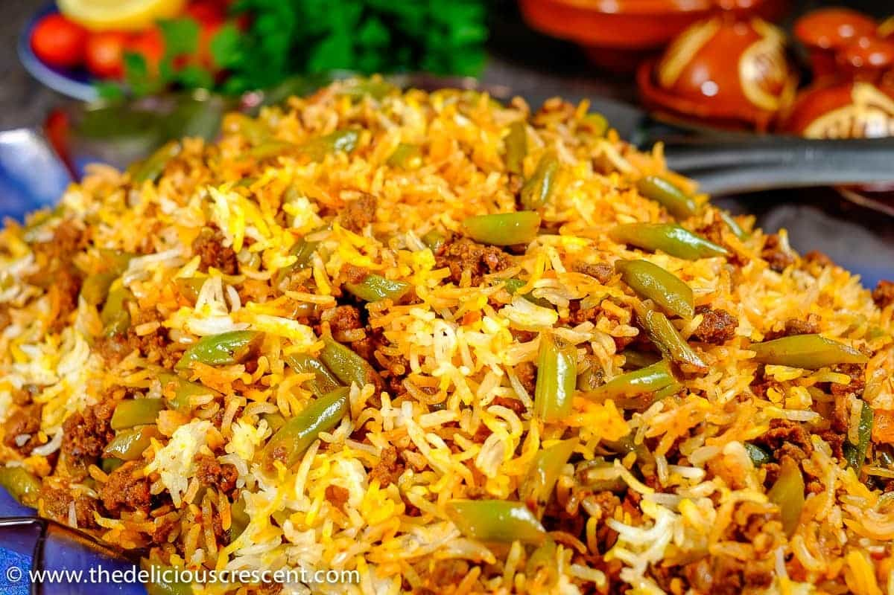

Lubia Polo

This is a dish that I grew up eating because of a persian uncle by marriage. Over the years of eating this dish it was one that stuck out
above the rest. The rice is light and aromatic, and enhanced by the presence of the rare and prized Saffron. The combination of green beans, rice,
and usually lamb or beef, makes for an overall amazing dining experience that transports you to another world, to a land far far away. Credit for
this specific recipe goes to unicornsinthekitchen.
Ingredients
- 2 tablespoon vegetable oil or olive oil
- 1 onion chopped
- 8 ounces ground beef 93% lean
- 1 teaspoon turmeric
- ½ teaspoon cayenne pepper
- 1 teaspoon curry powder
- ½ teaspoon cinnamon
- 1 teaspoon salt
- 2 tablespoon tomato paste
- ½ cup water
- 1 lb fresh green bean cut into ½ inch pieces
Rice
- 6 cups water
- 2 cups Royal Chef’s Secret Basmati Rice
- 1 ½ teaspoon salt
- 6 tablespoon vegetable oil
- 2 potatoes sliced (½ inch thickness)
- ¼ cup bloomed saffron
Yield: About six servings.
Instructions
- Heat the oil in a large pan over medium heat.
- Saute onion until golden brown, add the ground beef and cook until no longer
pink. Add in turmeric, cayenne pepper, curry, cinnamon and salt to the ground
beef and cook for a couple of minutes.
- Add in tomato paste and water. Mix well until everything is combined. Stir
in the green beans and bring it to a low simmer. Cover and cook until the
green beans are fully cooked. Add in more water if needed. Taste to make
sure the flavors are there. Set the green beans and beef mixture aside.
Rice:
- Bring a pot of water with the salt to a rolling boil. Wash the Basmati rice
two to three times to discard excess starch.
- When the water starts boiling, add the rice and boil for about 6 minutes
until the rice is par cooked or al dente. The rice is ready when you're
able to break a rice grain into two pieces using your thumb and index
finger, but the rice still has to be hard in the middle. The outer layer
is soft but the grain is still hard in the middle. (See more noted
about this on How to make Persian rice and tahdig. )
- Turn the heat off and place a colander in the sink. Lift the pot and pour
the rice into the colander and rinse it using cold water to stop the
cooking process.
- Place the pot back on the burner and turn the heat to medium high. Once
the bottom of the pot is dry, pour 3 tablespoon vegetable oil into the
pot and arrange the potato slices so they cover the bottom of the pot.
- Scoop one third of the rice into the pot over the potatoes. Layer with
some bloomed saffron and one third of the green bean mixture. Repeat
until you're out of rice and filling, make sure the rice is shaped
like a mountain, meaning you have more rice in the middle than around
the edges.
- Pour ⅓ cup water around the edges, wrap the lid in a clean kitchen
cloth/towel and place it on the pot (This is for the towel to absorb
the steam, resulting in a fluffy rice).
- Turn the heat to medium high (but not too high) and cook the rice for
about 15 minutes. Lift the lid to see the steam escape and then pour
3 tablespoon vegetable oil on the rice.
- Cover again and cook for another 30 minutes until the rice is fully
cooked and the flavors are fully combined. Fluff the rice a bit to
have the filling and rice mix completely.
- Serve with Salad Shirazi and plain yogurt sprinkled with dried mint.
Notes
- You can make the green bean filling in advance and lightly heat it before layering it with the rice to make sure it has the right consistency.
- While making the green bean and ground beef filling, make sure there is enough water to help the beans cook in the meat sauce. Add a little more water (¼ cup at a time) if you feel the water isn't enough.
- Make sure the pot you're using is big enough to fit in the rice and the filling.
- You can use pieces of lavash bread for the tahdig instead of potato slices.
- Store the leftovers in an airtight glass container and refrigerate for up to four days.
- Calories:512kcal
- Carbs:67g
- Fat:21g
- Fiber:5g
- Sugar:4g
- Sodium:1065mg
Return to main page